7 Day 7
7.1 Common isotropic correlation functions
- Tobler’s law of geography
- “Everything is related to everything else, but near things are more related than distant things”
- These functions follow Tobler’s law in that the function decays with distance
- These functions are proven to be symmetric and positive definite, thus are valid correlation functions
## make a function to plot the correlation functions
plot_corr_function <- function(corr_fun, ## notice that this input is a function
d = seq(0, 10, length.out = 1000),
phi = c(0.1, 0.5, 1, 5, 10),
title = NULL,
...) {
C_h <- matrix(0, length(d), length(phi))
for (i in 1:length(phi)) {
C_h[, i] <- corr_fun(d, phi[i], ...)
}
print(
data.frame(d = d, C_h = c(C_h), phi = factor(rep(phi, each = length(d)))) %>%
ggplot(aes(x = d, y = C_h, group = phi, color = phi)) +
geom_line() +
ylim(c(0, 1)) +
ggtitle(title)
)
}7.1.0.1 Exponential correlation function
\[\begin{align*} C(d) & = e^{- \frac{d}{\phi} } \end{align*}\]
where \(\phi\) is the spatial range parameter (called the length-scale in Gaussian process literature). Note that this function is not differentiable at 0.
exponential_cor <- function (d, phi, ...) {
return(exp( - d / phi))
}
plot_corr_function(exponential_cor, title = "Exponential correlation function")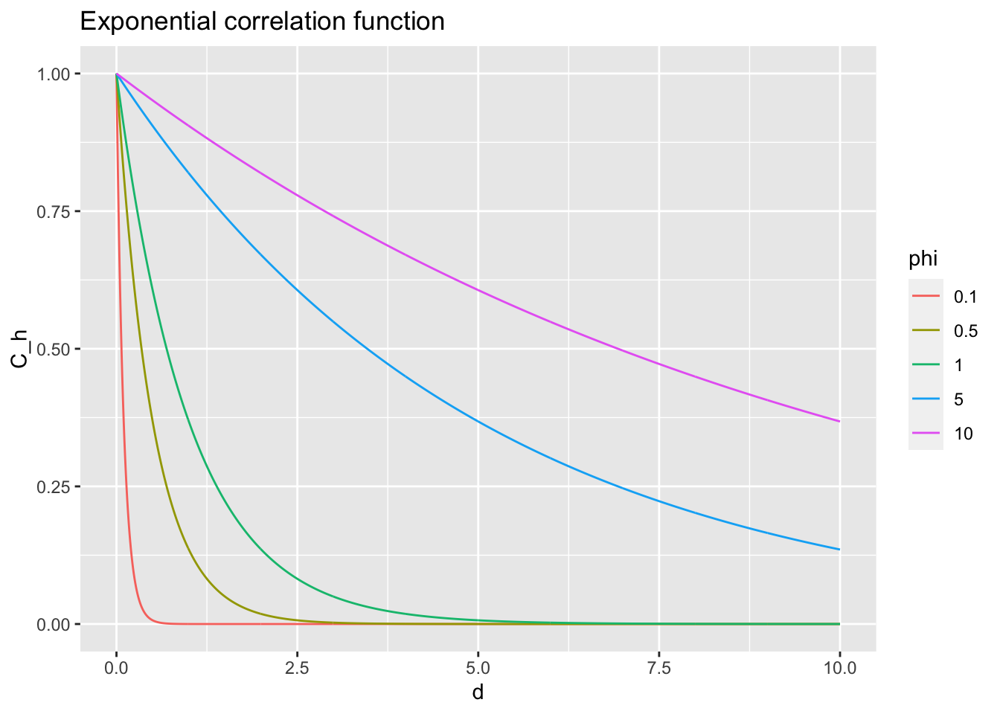
Sometimes this is parameterized using the inverse spatial range \(\theta = \frac{1}{\phi}\)
\[\begin{align*} C(d) & = e^{- d\theta} \end{align*}\]
7.1.0.2 Squared exponential (Gaussian) correlation functions
\[\begin{align*} C(d) & = e^{- (\frac{d}{\phi})^2 } \end{align*}\]
Notice that this function is differentiable at 0.
gaussian_cor <- function (d, phi, ...) {
return(exp( - (d / phi)^2))
}
plot_corr_function(gaussian_cor,
title = "Gaussian (squared exponential) correlation function")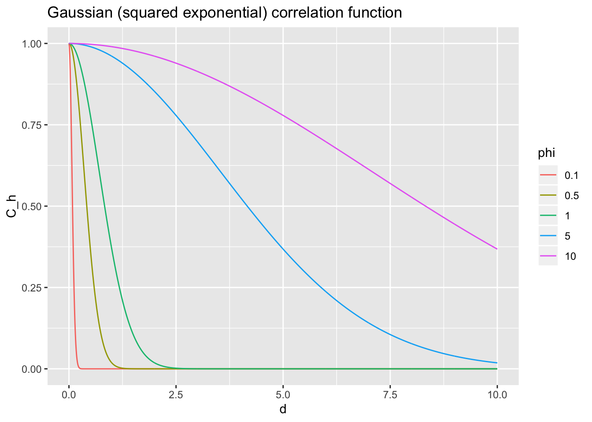
7.1.0.3 Powered exponential correlation functions
\[\begin{align*} C(d) & = e^{- (\frac{d}{\phi})^k } \end{align*}\]
powered_exp_cor <- function (d, phi, k, ...) {
return(exp( - (d / phi)^k))
}
plot_corr_function(powered_exp_cor, k = 1,
title = "Powered exponential correlation function, k = 1")
plot_corr_function(powered_exp_cor, k = 2,
title = "Powered exponential correlation function, k = 2")
plot_corr_function(powered_exp_cor, k = 3,
title = "Powered exponential correlation function, k = 3")
plot_corr_function(powered_exp_cor, k = 4,
title = "Powered exponential correlation function, k = 4") 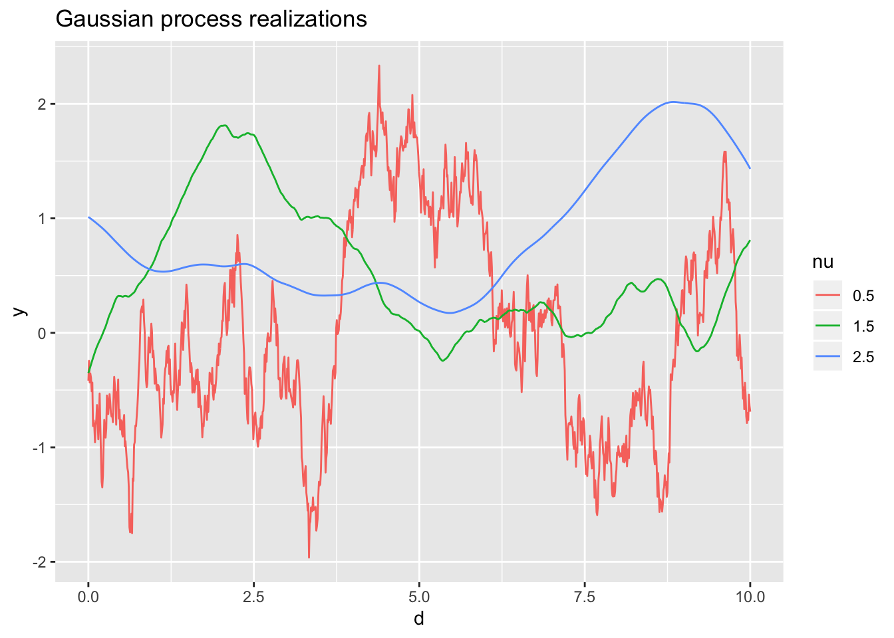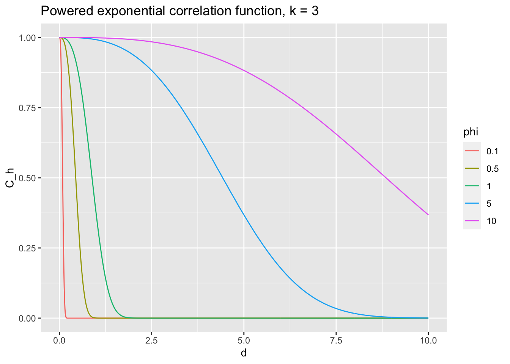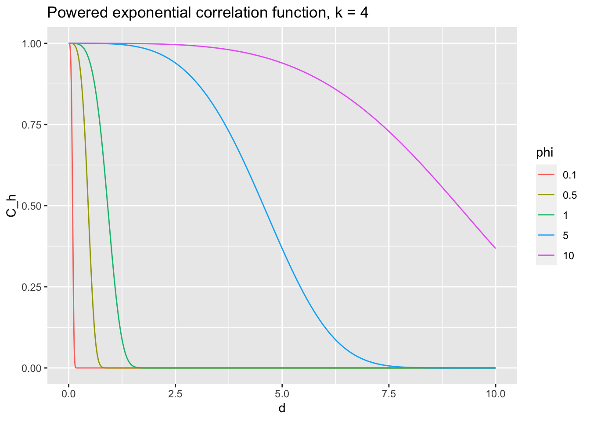
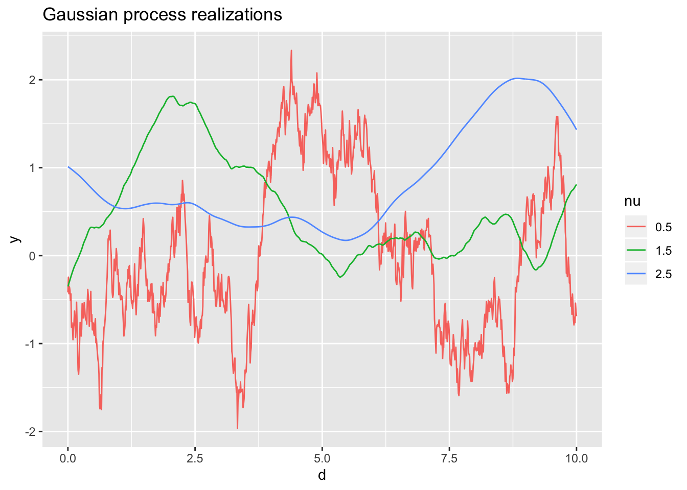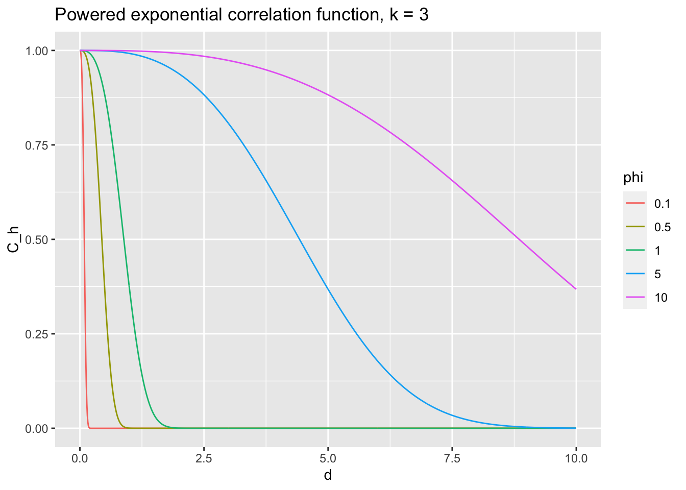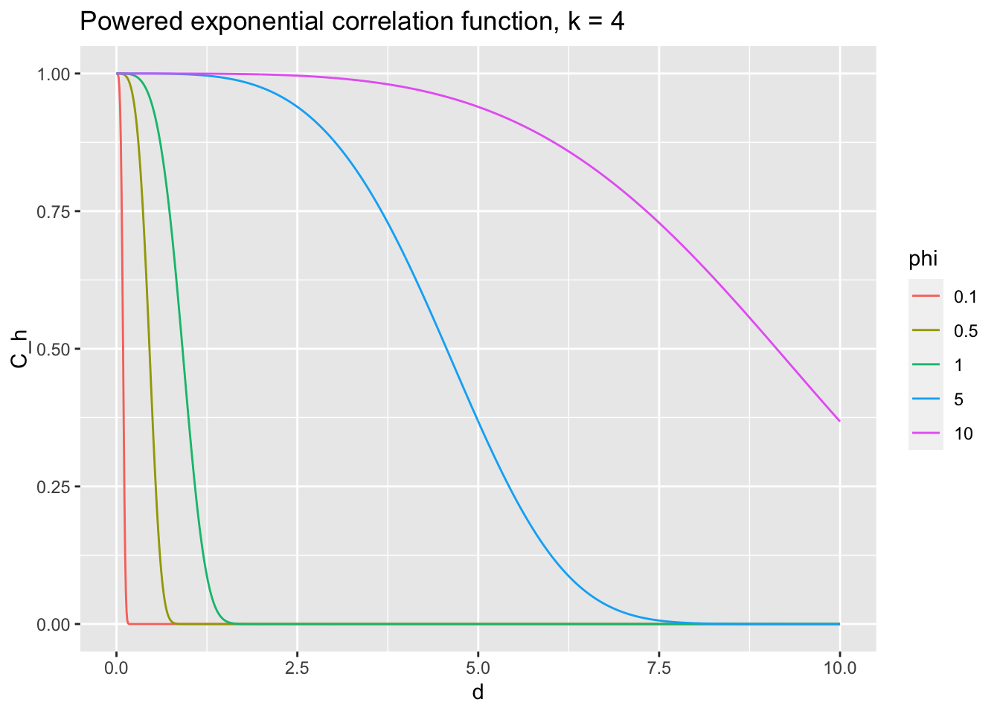
For future classes (basis representations) Visual exploration of Gaussian Processes
7.1.0.4 Matern correlation functions
\[\begin{align*} C(d) & = \frac{2^{1 - \nu}}{\Gamma(\nu)} \left( \sqrt{2 \nu} \frac{d}{\phi} \right)^\nu K_\nu \left( \sqrt{2 \nu} \frac{d}{\phi} \right) \end{align*}\]
- \(\Gamma(\cdot)\) is the gamma function
- \(K_\nu(\cdot)\) is the modified Bessel function of the second kind
- \(\phi\) is the range parameter
- \(\nu\) is the smoothness parameter
## Use the Matern fucnction from the fields library
plot_corr_function(Matern, range = c(0.1, 0.5, 1, 5, 10), smoothness = 0.15,
title = "Matern correlation function, smoothness = 0.15")
plot_corr_function(Matern, range = c(0.1, 0.5, 1, 5, 10), smoothness = 0.5,
title = "Matern correlation function, smoothness = 0.5")
plot_corr_function(Matern, range = c(0.1, 0.5, 1, 5, 10), smoothness = 5,
title = "Matern correlation function, smoothness = 5")
plot_corr_function(Matern, range = c(0.1, 0.5, 1, 5, 10), smoothness = 50,
title = "Matern correlation function, smoothness = 50")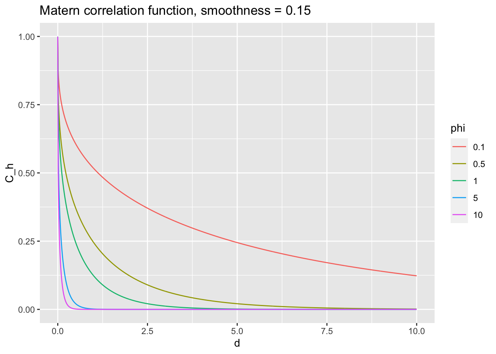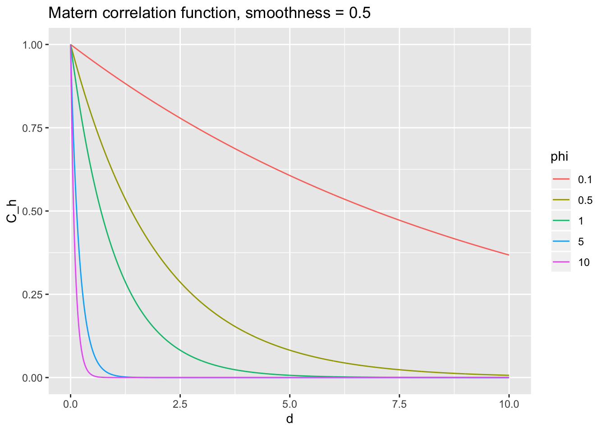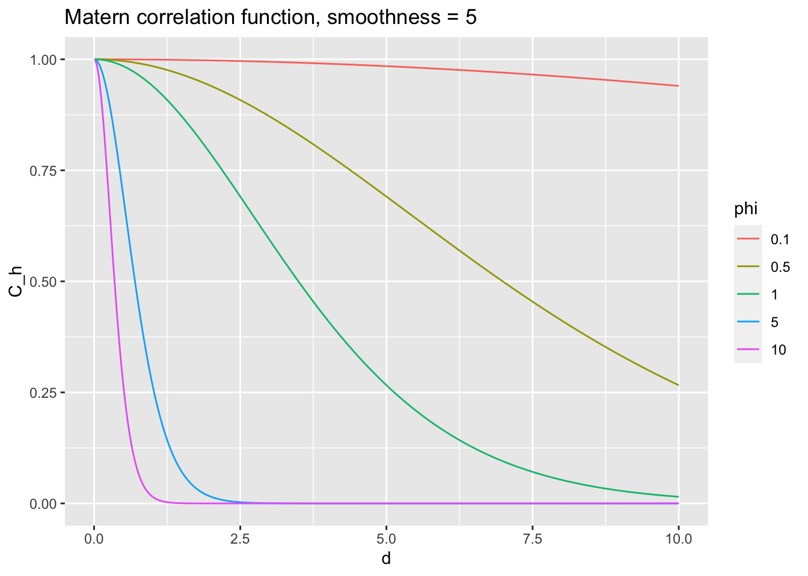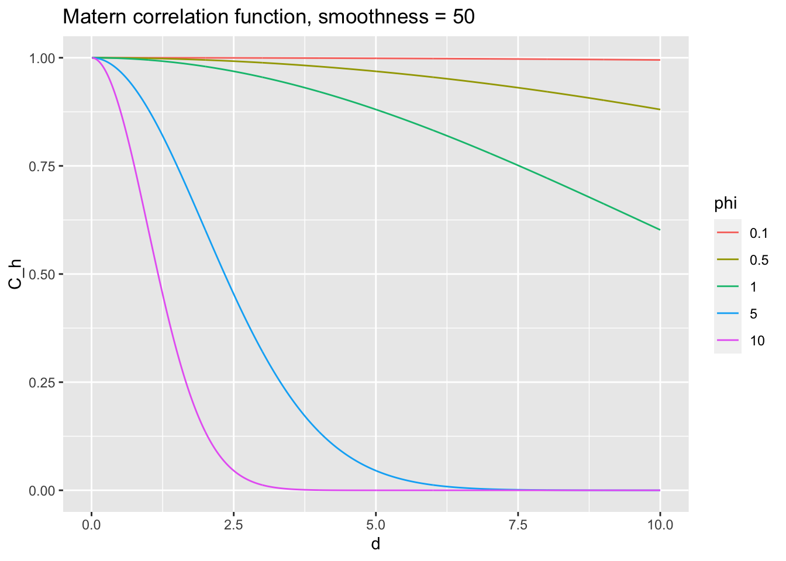
- Special Cases
- \(\nu = \frac{1}{2} \Rightarrow C(d) = e^{- \frac{d}{\phi} }\) is the exponential correlation function
- \(\nu = \frac{3}{2} \Rightarrow C(d) = \left(1 - \frac{\sqrt{3}d}{\phi} \right) e^{- \frac{\sqrt{3}d}{\phi} }\)
- \(\nu = \frac{5}{2} \Rightarrow C(d) = \left(1 - \frac{\sqrt{5}d}{\phi} + \frac{5 d^2}{3 \phi^2} \right) e^{- \frac{\sqrt{5}d}{\phi} }\)
- \(\nu \rightarrow \infty \Rightarrow C(d) = e^{- \frac{1}{2} \left( \frac{d}{\phi} \right)^2 }\) is the Gaussian correlation function
Note: these functions are valid in \(\mathcal{R}^2\). There are generalizations of the functions to other geometries (spheres, stream networks, etc.) and higher dimensions (\(\mathcal{R}^d\)).
The Gaussian process with a Matern correlation function with parameter \(\nu\) is \(\lceil \nu \rceil\)-1 times differentiable in the mean-square sense
d <- seq(0, 10, length = 1000)
nu <- c(1/2, 3/2, 5/2)
C_h <- c(
Matern(d, range = 1, nu = nu[1]),
Matern(d, range = 1, nu = nu[2]),
Matern(d, range = 1, nu = nu[3])
)
dat <- data.frame(
d = d,
C_h = C_h,
nu = factor(rep(nu, each = length(d)))
)
ggplot(dat, aes(x = d, y = C_h, group = nu, color = nu)) +
geom_line() +
ggtitle("Matern correlation functions")
## simulate some Gaussian processes
dat$y <- c(
rmvn(
1,
mu = rep(0, 1000),
sigma = Matern(rdist(seq(0, 10, length = 1000)), range = 1, nu = nu[1])
),
rmvn(
1,
mu = rep(0, 1000),
sigma = Matern(rdist(seq(0, 10, length = 1000)), range = 1, nu = nu[2])
),
rmvn(
1,
mu = rep(0, 1000),
sigma = Matern(rdist(seq(0, 10, length = 1000)), range = 1, nu = nu[3])
)
)
ggplot(dat, aes(x = d, y = y, group = nu, color = nu)) +
geom_line() +
ggtitle("Gaussian process realizations")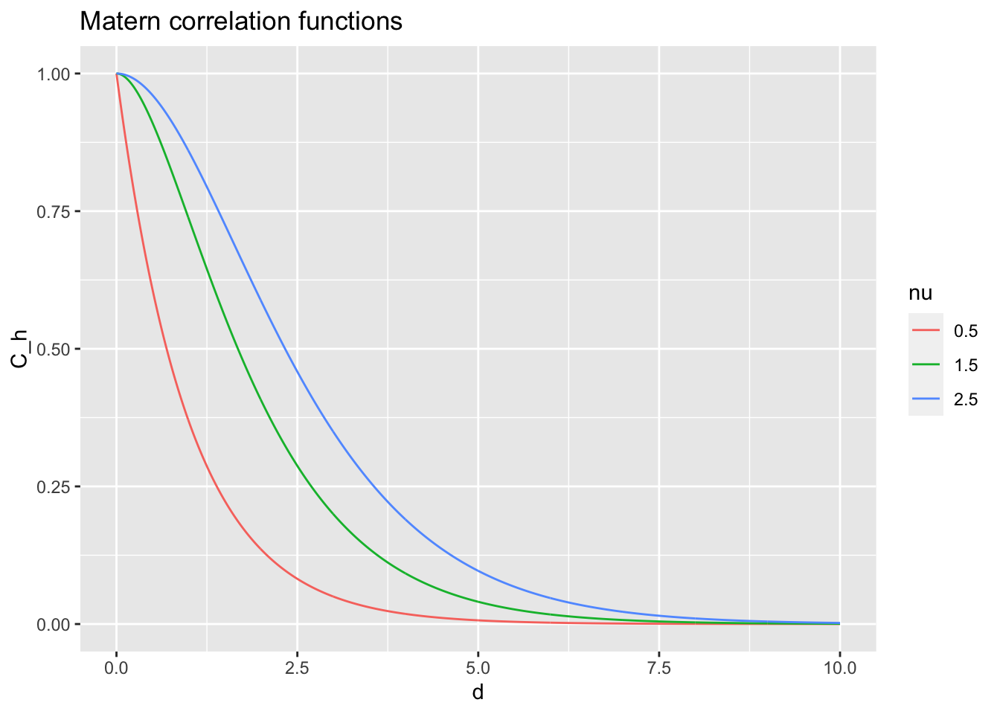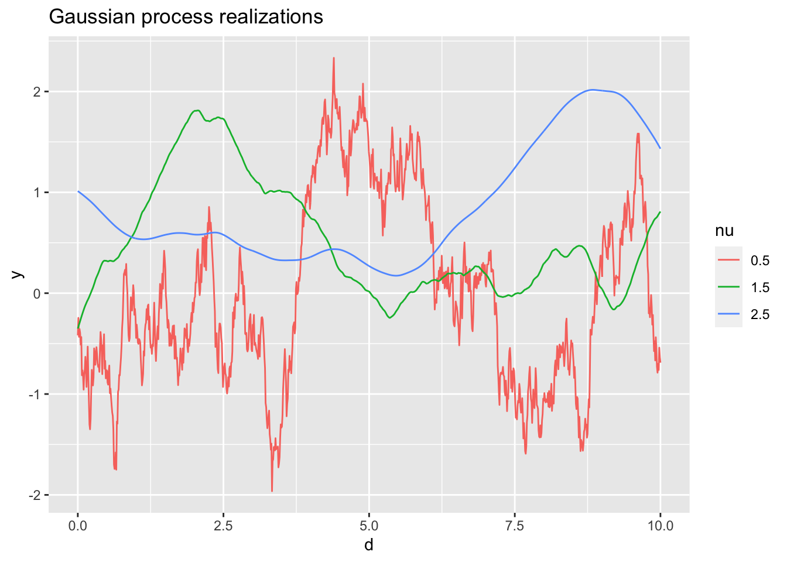